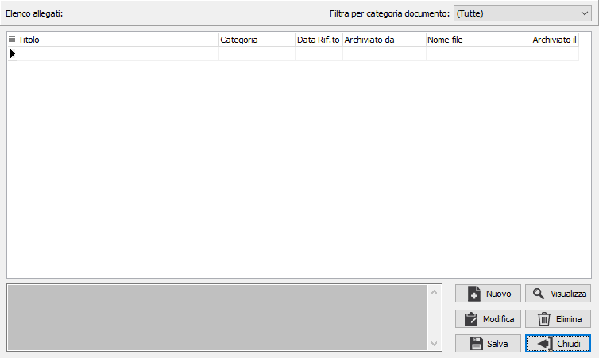
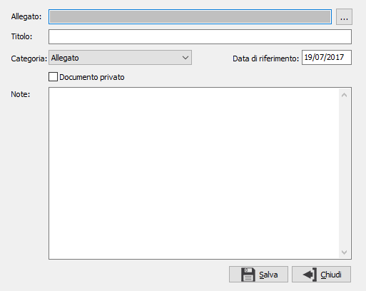
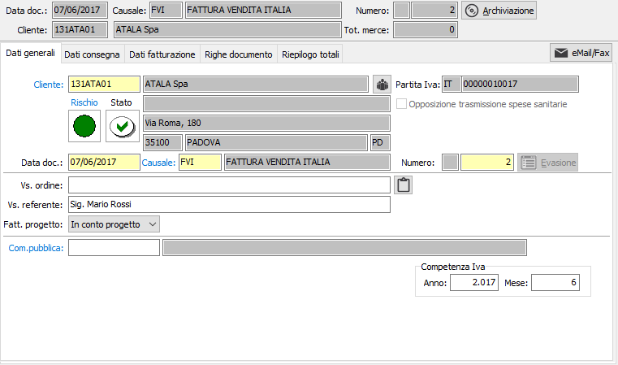
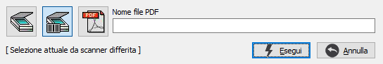
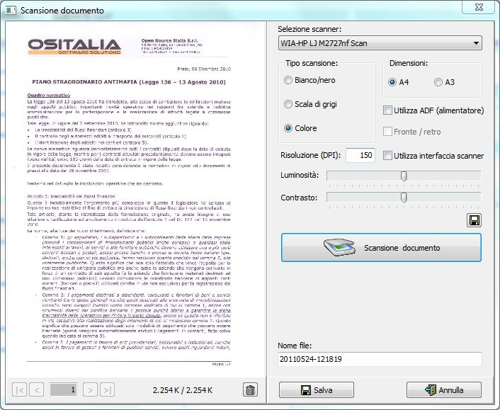

Allegare
un nuovo documento
Allegare
un nuovo documentoFile Store e Archiviazione documenti
La gestione di OS1 FileStore consente una duplice funzionalità:
gestione di allegati multipli collegabili direttamente a:
Prima nota contabile
Gestione documenti (DDT e fatture di vendita, DDT e fatture di acquisto, ordini clienti e fornitori, richieste di offerta a fornitori, offerte a clienti, packing list, liste di prelievo, autofatture, richieste di acquisto, ordini, fatture e rientri del conto lavoro)
Analisi DDT e fatture (vendite e acquisti)
Clienti
Fornitori
Sottoconti
Recapiti
Agenti
Articoli
Distinte basi
Lotti
strumento di archiviazione documenti semplice (senza la gestione dei successivi passaggi relativi a firma digitale, conservazione legale, ed altro per i quali già esistono moduli d’integrazione con i prodotti ArchiviOK e Arxivar) attivo su:
Prima nota contabile
Gestione documenti (DDT e fatture di vendita, DDT e fatture di acquisto, ordini clienti e fornitori, richieste di offerta a fornitori, offerte a clienti, packing list, liste di prelievo, autofatture, richieste di acquisto, ordini, fatture e rientri del conto lavoro)
Analisi DDT e fatture (vendite e acquisti)
Analisi sottoconti
Analisi estratto conto clienti/fornitori
Gestione allegati multipli
Il bottone , presente sulla toolbar, consente di accedere alla finestra di gestione allegati.

Nel campo "Filtra per categoria documento" è possibile impostare la categoria dei documenti che si vuole filtrare, vengono visualizzate tutte le categorie presenti nell'apposita tabella.
Tramite i bottoni presenti è possibile:
Allegare
un nuovo documento
 Visualizzare
l'allegato su cui si è posizionati
Visualizzare
l'allegato su cui si è posizionati
Modificare l'allegato su cui si è posizionati
Eliminare l'allegato su cui si è posizionati
Salvare su disco, con scelta del nome, l'allegato su cui si è posizionati
Chiudere la maschera di gestione
In fase di inserimento e di modifica viene aperta la seguente maschera:

Per ogni allegato deve essere assegnato un titolo (di default viene assegnato il nome del file che viene allegato), la categoria di appartenenza, la data di riferimento (utilizzata per l'ordinamento degli allegati nella griglia di visualizzazione), l'attribuzione di documento privato (l'allegato viene visualizzato solo per l'utente che l'ha inserito) ed eventuali note.
Archiviazione documenti
Il modulo può essere utilizzato anche per gestire l’archiviazione dei documenti in alternativa agli altri strumenti di archiviazione (es. Arxivar) nel caso in cui non debba essere gestita oltre all’archiviazione anche la firma digitale e la conservazione legale; ma può anche coesistere con i suddetti moduli mantenendo comunque la funzionalità di memorizzazione degli allegati.

Sulle procedure in cui è attiva l'archiviazione dei documenti è presente il bottone , in cui è possibile:
visualizzare il documento, se archiviato
archiviare il documento
visualizzare lo stato dell'archiviazione del documento
accedere agli allegati del documento
Sui documenti e sulla prima nota contabile selezionando l'archiviazione del documento viene effettuata e archiviata la stampa in formato PDF.
Sull'analisi sottoconti e sull'estratto conto clienti/fornitori selezionando l'archiviazione del documento è possibile assegnare un file PDF presente su disco oppure acquisire i documenti direttamente da scanner, tramite la seguente maschera.

Selezionando l'acquisizione da scanner viene aperta la maschera di scansione documento.
